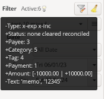
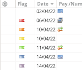

Favorite saved filters

From the statistic report and the show all transaction window, you can now manage a list of favorite filters, saved for each of your wallet.
This will ease the grouping you want to show those reports. Read the favorite filter usage for more details.
↑ Back to Top
Tooltip of active filters

In several report windows: statistics, trend time and balance, there is now a tooltip that shows the active filters, as sometimes there are implicit filters you cannot control, and this will help you understand what the results are composed of.
The whole area between Filter and the filter button will show the tooltip if you put the mouse pointer over it.
↑ Back to Top
Color flags

There is now 6 color flags you can assign to transaction, colors are Red, Orange, Yellow, Green, Blue and Purple.
The assign can only be done from the ledger window using the context menu or some shortcuts CTRL+x.
There is also a new quick-filter to easily filter on flags.
↑ Back to Top
Life energy

Life energy is a measurement of your expense by hours of work, based on you estimate earning by hour. This is an alternative and interesting way to consider your spending.
After you have filled your estimate 'earn by hour' into Properties dialog, you will be able to toggle on/off an additional (..h..m) beside the Expense into the ledger window, there is a toggle toolbar button on the top.
↑ Back to Top
Payment re-order & hide
A new preference is available for you to re-order the payment method and hide the ones you don't use.
↑ Back to Top